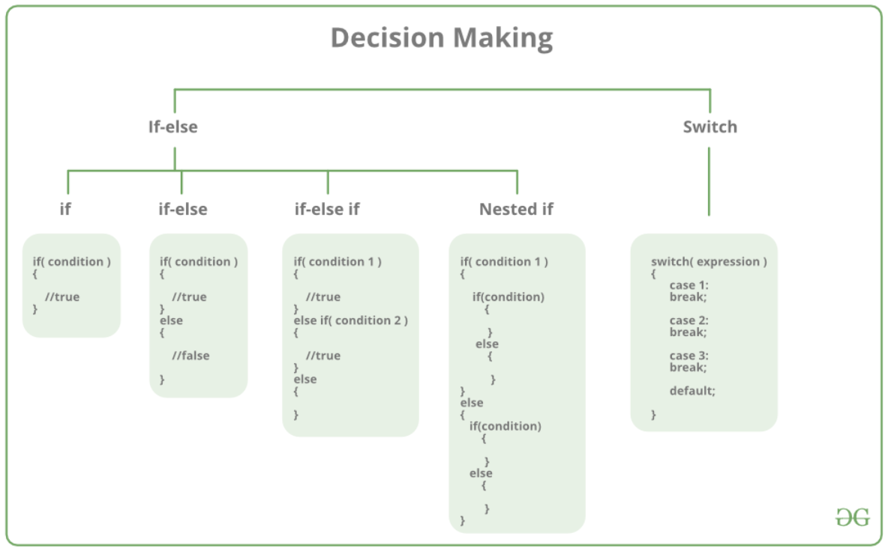

Lab 4 : Decision making
Contents
Lab 4 : Decision making#
Welcome to the third CSC 200 lab! This will familiarize you with using if, else and elif conditions for decision making as well as give you some experience in their proper use. Be sure to read and follow all instructions unless otherwise specified. You’ll find the table of contents for this lab below.
Part 1. Introduction#
There comes situations in real life when we need to make some decisions and based on these decisions, we decide what should we do next. Similar situations arise in programming also where we need to make some decisions and based on these decisions we will execute the next block of code. Decision-making statements in programming languages decide the direction of the flow of program execution.
Part 2. Decision making statements#
if statement in c++#
if statement is the most simple decision-making statement. It is used to decide whether a certain statement or block of statements will be executed or not i.e if a certain condition is true then a block of statement is executed otherwise not. Here, the condition after evaluation will be either true or false. If the condition is true then it will execute the block of statements below it otherwise not.
if (condition)
{
//Statement to execute if condition is treu
}
If we do not provide the curly braces ‘{‘ and ‘}’ after if(condition) then by default if statement will consider the first immediately below statement to be inside its block.
if(condition)
statement1;
statement2;
// Here if the condition is true, if block will consider only statement1 to be inside
// its block.
#include<iostream>
int main()
{
int i = 10;
if (i > 15)
{
std::cout<<"10 is less than 15";
}
std::cout<<"I am Not in if";
}
I am Not in if
because i is smaller that 15, the condition is false then the block below the if statement is not executed.
if-else statement in c++#
The if statement alone tells us that if a condition is true it will execute a block of statements and if the condition is false it won’t. But what if we want to do something else if the condition is false. Here comes the C++ else statement. We can use the else statement with if statement to execute a block of code when the condition is false.
if (condition)
{
// Executes this block if condition is true
}
else
{
// Executes this block if condition is false
}
#include<iostream>
int main()
{
int i = 20;
if (i < 15)
std::cout<<"i is smaller than 15";
else
std::cout<<"i is greater than 15";
return 0;
}
i is greater than 15
The block of code following the else statement is executed as the condition present in the if statement is false.
nested-if in c++#
A nested if in C++ is an if statement that is the target of another if statement. Nested if statements mean an if statement inside another if statement. Yes, C++ allows us to nested if statements within if statements, i.e, we can place an if statement inside another if statement.
condition is false. Here comes the C++ else statement. We can use the else statement with if statement to execute a block of code when the condition is false.
if (condition1)
{
// Executes when condition1 is true
if (condition2)
{
// Executes when condition2 is true
}
}
#include <iostream>
int main()
{
int i = 10;
if (i == 10)
{
// First if statement
if (i < 15)
std::cout<<"i is smaller than 15\n";
// Nested - if statement Will only be executed if statement above is true
if (i < 12)
std::cout<<"i is smaller than 12 too\n";
else
std::cout<<"i is greater than 15";
}
return 0;
}
i is smaller than 15
i is smaller than 12 too
if-else-if in c++#
Here, a user can decide among multiple options. The C++ if statements are executed from the top down. As soon as one of the conditions controlling the if is true, the statement associated with that if is executed, and the rest of the C++ else-if ladder is bypassed. If none of the conditions are true, then the final else statement will be executed.
```cpp
if (condition) statement;
else if (condition) statement;
else statement;
#include<iostream>
int main() {
int i = 20;
if (i == 10) std::cout<<"i is 10";
else if (i == 15) std::cout<<"i is 15";
else if (i == 20) std::cout<<"i is 20";
else std::cout<<"i is not present";
}
i is 20
switch statement in c++#
- Switch case statement evaluates a given expression and based on the evaluated value(matching a certain condition), it executes the statements associated with it. Basically, it is used to perform different actions based on different conditions(cases).
Switch case statements follow a selection-control mechanism and allow a value to change control of execution.
They are a substitute for long
ifstatement that compare a variable to several integral values.The switch statement is a multiway branch statement. It provides an easy way to dispatch execution to different parts of code based on the value of the expression.
switch (n)
{
case 1: // code to be executed if n = 1;
break;
case 2: // code to be executed if n = 2;
break;
default: // code to be executed if n doesn't match any cases
}
breakThis keyword is used to stop the execution inside a
switchblock. It helps to terminate theswitchblock and break out of it.defaultThis keyword is used to specify the set of statements to execute if there is no case match.
The expression provided in the switch should result in a constant value otherwise it would not be valid. Some valid expressions for switch case will be
Duplicate case values are not allowed.
The
defaultstatement is optional. Even if theswitchcase statement do not have adefaultstatement, it would run without any problem.The
breakstatement is used inside theswitchto terminate a statement sequence. When abreakstatement is reached, theswitchterminates, and the flow of control jumps to the next line following theswitchstatement.The
breakstatement is optional. If omitted, execution will continue on into the next case. The flow of control will fall through to subsequent cases until abreakis reached.Nesting of
switchstatements is allowed, which means you can haveswitchstatements inside anotherswitch. However nestedswitchstatements should be avoided as it makes the program more complex and less readable.switchstatements are limited to integer values only in the check condition.
#include <iostream>
int main()
{
int x = 2;
switch (x) {
case 1:
std::cout << "Choice is 1";
break;
case 2:
std::cout << "Choice is 2";
break;
case 3:
std::cout << "Choice is 3";
break;
default:
std::cout << "Choice other than 1, 2 and 3";
break;
}
return 0;
}
Choice is 2
Part 3. Exercises#
…that tells whether a given letter is a consonant or vowel.
…that takes a value from the user as input any character and check whether it is the alphabet, digit or special character. Using if-else.
…that checks whether a number is a prime or composite number.
…that takes the basic salary of an employee as input and calculate its gross salary by using the if-else statement according to the following:
Factors to be calculated: HRA : Housing Rent Allowance DA : Dearness Allowance [aka Cost of Living]
Basic Salary <= 10000 : HRA = 20%, DA = 80%
Basic Salary <= 20000 : HRA = 25%, DA = 90%
Basic Salary > 20000 : HRA = 30%, DA = 95%
Note: this will require some math on your part
Requirements#
Exercise 1 completed.
Exercise 2 completed.
Exercise 3 completed.
Exercise 4 completed.
Submission#
- To Receive Credit
Submit a compressed folder with all your files included within.
- Naming Conventions
Filename => ex#.cpp
Compressed => lastname_firstname_lab#
Note => compressed files end in .zip